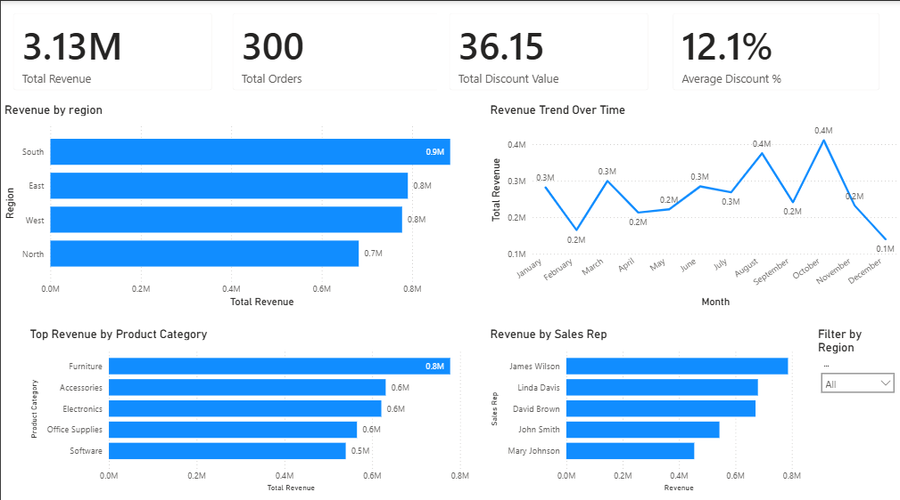

Cloud Architecture
The analytics solution uses a cloud-based data pipeline that processes raw data, transforms it using Python, stores it in PostgreSQL, and visualizes insights through Power BI running on an AWS virtual machine.

End-to-End Sales Analytics solution powered by a cloud-based ETL pipeline using Python, PostgreSQL, AWS, and Power BI to deliver automated KPI reporting and executive dashboards.

Previous Reporting Cycle
Automated Reporting Cycle
Performance Improvement
Executive KPIs Centralized
The organization lacked a centralized view of sales performance. Sales data existed across multiple Excel spreadsheets which required manual consolidation and analysis.
Raw sales data was extracted from Excel files and imported into a Python-based ETL pipeline developed in Google Colab.
Using Python (Pandas), the dataset was cleaned and standardized:
The cleaned dataset was exported and loaded into PostgreSQL hosted on Supabase, enabling structured SQL analysis.
Power BI Desktop was deployed on a Windows Virtual Machine hosted on AWS EC2. This allowed dashboard development in a cloud environment without requiring a local Windows system.
The analytics solution uses a cloud-based data pipeline that processes raw data, transforms it using Python, stores it in PostgreSQL, and visualizes insights through Power BI running on an AWS virtual machine.